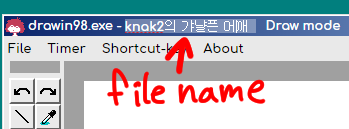
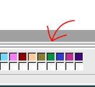
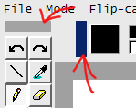
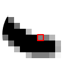

이 프로그램은 무엇입니까?
심심해서 만든 그림그리기 툴입니다
그림이 안그려집니다.
이 프로그램은 데스크톱 윈도우10의 Chrome, Edge, Firefox 브라우저 에서만
테스트 되었기 때문에 mac이나 아이패드 같은 모바일은 작동이 되는지 안되는지
잘 모르겠어요. 크롬 브라우저에서 사용을 권장합니다.
저장되는 파일 이름을 바꾸는 방법

윗쪽 타이틀바를 보시면 처음에 Untitled라고 되어있는 부분이 있습니다
그 부분을 클릭해서 이름을 바꿔 두면 되요.
큰 이미지를 불러오면 짤려서 나옴
이 프로그램에서 그린 가로 600px짜리 이미지만 딱맞게 불러옵니다
캔버스 크기를 조절하는 방법

일단 세로 크기만 조절이 되고요
- 캔버스 회색 테두리 아랫쪽에 보면 얇은 선이 2줄로 그어진 부분이 있어요.
- 그 부분을 클릭하신 후 위아래로 움직이면 크기 조절이 됩니다
- 150~800 픽셀 사이로만 조절되요
단축키
윈도우 메뉴에 Shortcut-key를 클릭하면 단축키 목록을 볼 수 있어요
녹색 부분은 오른손잡이용, 파란색 부분은 왼손잡이용입니다.
단축키 변경은 못해요ㅠ
툴 위치 옮기기

- 툴 윗쪽이나 왼쪽을 보면 작은 회색 상자가 보여요.
- 그 상자를 클릭하면 2개의 빨간 막대기가 나타나는데
- 그 쪽으로 드래그 하면 툴을 이동 시킬 수 있어요.
- 위아래나 오른쪽 왼쪽으로 약간 이동시킬 수도 있으니 참고하시길
반투명한 색깔로 칠하기
컬러 팔래트의 커다란 색깔 상자를 클릭하면
불투명 반투명으로 번갈아 변경됩니다.
스포이드 툴로 색깔을 선택할때 원 모양은?

돋보기 기능입니다. 클릭을 떼지 말고
마우스를 이리저리 움직이면, 돋보기가 1픽셀씩 움직이는데
중간색을 선택할때 편리합니다
컬러 팔레트 아랫쪽은 전부 흰색네모들
현재 색깔을 저장하는 상자입니다.
- 일단 스포이드툴로 추가하고 싶은 색깔을 뽑아주시구요
- 원하는 상자에 마우스를 길게 클릭하면 색이 저장이 되요.
- 그냥 클릭하면 색이 선택되구요.
작은 마우스 커서 사용하기
화면의 오른쪽 아래 구석에 보면, [ tiny] 라고 적혀진 상자가 보여요.
tiny] 라고 적혀진 상자가 보여요.
클릭하면 캔버스에서 작은 커서를 쓸 수 있어요.
이미지 이동 툴을 많이 쓰면 왜 이미지 테두리 부분이 점점 사라지는 현상
이미지 용량을 제한하기 때문에 이미지가 짤립니다. 이미지 이동을 조심해서 하세요.
실수했다면 작업취소 버튼을 눌러서 원래대로 돌려놓으면 됩니다.
이 특징을 이용해 손쉽게 캔버스를 청소 할 수 있어요.
손 툴을 이용해서 캔버스를 이동 시킨 후, 위치를 원래대로 하기
캔버스 축소버튼나, 단축키를 여러번 누르세요
확대가 1배일때는 캔버스 위치가 초기위치로 바뀌어요
버그보고나 하고 싶은 말등은 about을 눌러 나오는 제 트위터나 이메일(cube4none@gmail.com)로 보내주세요.